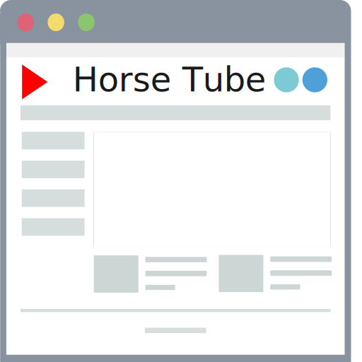
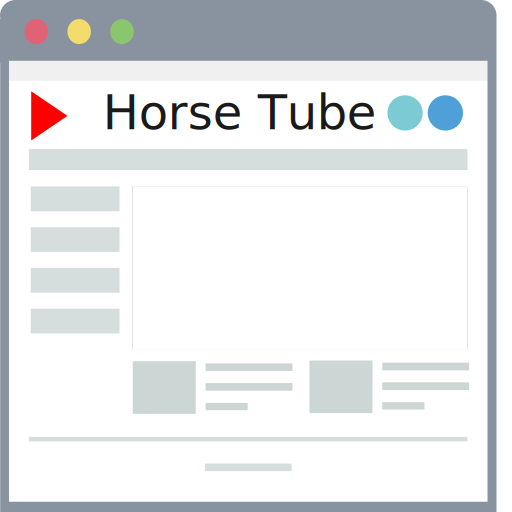
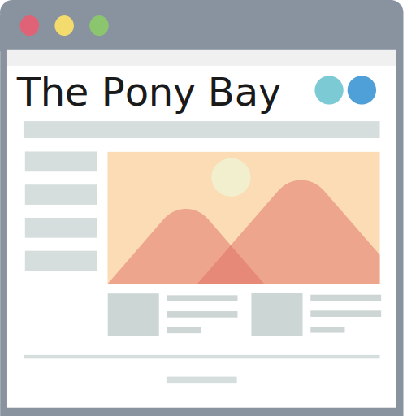
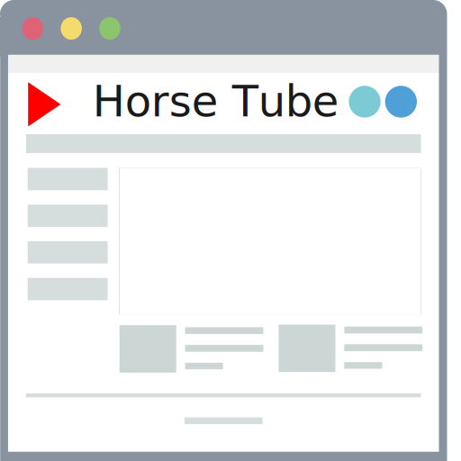
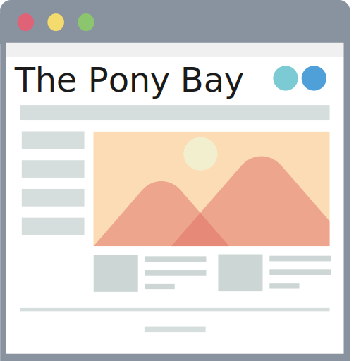

Streaming
Frames are downloaded, displayed, then discarded.
Don't forget to share, like and subscribe
Buffering...
 


Downloading
Frames are downloaded, (usually) not displayed, then saved.

Frames are downloaded, displayed, then discarded.

Frames are downloaded, (usually) not displayed, then saved.
